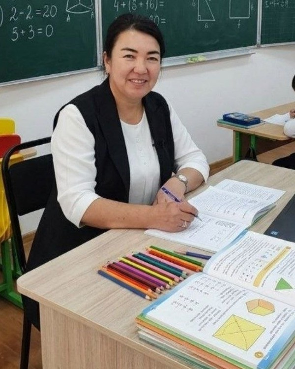

1–4-sinflar
Boshlang'ich ta'lim: Mustahkam poydevor
Tajribali sinf rahbarlari (1-sinf: Zulxumor Djurayeva, 2-sinf: Shahnoza Shamsiddinova, 3-sinf: Zuhra Bektemirova, Hanifa Rahmatova va yordamchi ustoz Umriya Qahhorova) nazoratida har bir bolaning ilmga intilishini rivojlantiruvchi ta'lim.
- Singapur matematikasi, tahliliy masalalar va mental arifmetika
- Cambridge English darsliklari va audio-vizual mashg'ulotlar
- Husnixat, tez o'qish va kitobxonlik madaniyati
- Barcha uy vazifalarini maktabda o'qituvchilar bilan 100% bajarish
